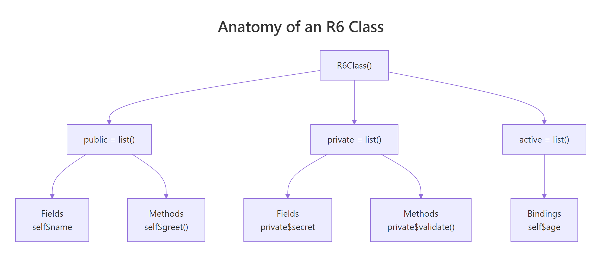

R6 classes give you mutable objects in R, when you modify an R6 object, the change happens in place instead of creating a copy. This makes R6 the right choice when you need shared state, resource management, or objects that talk to external systems like databases and APIs.
What makes R6 different from S3 and S4?
S3 and S4 follow R's copy-on-modify rule, assign an object to a new variable, change one, and the other stays untouched. R6 breaks that rule deliberately. Both variables point to the same object, so a change through one is visible through the other. This is called reference semantics.
RReference semantics with Counter
# R6 objects mutate in place, both variables see the changelibrary(R6)Counter <-R6Class("Counter", public =list( count =0, increment =function() { self$count <- self$count +1invisible(self) } ))c1 <- Counter$new()c2 <- c1 # c2 points to the SAME objectc1$increment()c1$increment()c1$count#> [1] 2c2$count#> [1] 2
Both c1 and c2 show a count of 2, even though we only called increment() on c1. That's reference semantics in action, there's only one object, and both variables point to it.
Think of it like a sticky note on a document. S3 photocopies the document every time you hand it to someone, each person has their own copy and edits don't affect anyone else. R6 just sticks another label on the same document, everyone reads and writes the same page.
Compare this directly with how a regular R list behaves:
The list copy is independent, changing s3_copy didn't touch s3_list. That's the opposite of what happened with our R6 Counter above.
Key Insight
Reference semantics means R6 objects behave like Python or Java objects. If you've used objects in another language, R6 will feel familiar, assigning an object to a new variable doesn't create a copy, it creates another reference to the same thing.
Try it: Create an R6 class called Scoreboard with a score field (starting at 0) and an add_points(n) method. Create one scoreboard, assign it to a second variable, add 10 points through the second variable, and verify the first variable also shows 10.
RExercise: Build Scoreboard class
# Try it: build a Scoreboard with reference semanticsScoreboard <-R6Class("Scoreboard", public =list( score =0, add_points =function(n) {# your code here } ))# Test:ex_s1 <- Scoreboard$new()ex_s2 <- ex_s1ex_s2$add_points(10)ex_s1$score#> Expected: 10
Explanation: Because R6 uses reference semantics, ex_s2 and ex_s1 point to the same object. Adding points through either variable updates the shared score.
How do you create an R6 class?
Every R6 class starts with a call to R6Class(). You give it a class name and a public list containing fields (data) and methods (functions). Methods access the object's own fields using self$.
RPerson class with initialize
# Define a Person class with fields and methodsPerson <-R6Class("Person", public =list( name =NULL, age =NULL, initialize =function(name, age) { self$name <- name self$age <- age }, greet =function() {cat(paste0("Hi, I'm ", self$name, " (", self$age, ").\n")) } ))p1 <- Person$new("Ada", 36)p1$greet()#> Hi, I'm Ada (36).p1$name#> [1] "Ada"
The initialize() method is R6's constructor, it runs automatically when you call $new(). Without it, fields keep their default values (both NULL here), and you'd have to set them manually after creation.
Methods can call other methods on the same object using self$. Let's add an introduce() method that builds on greet():
RMethods calling other methods
# Methods can call other methods via self$Person <-R6Class("Person", public =list( name =NULL, age =NULL, initialize =function(name, age) { self$name <- name self$age <- age }, greet =function() {cat(paste0("Hi, I'm ", self$name, " (", self$age, ").\n")) }, introduce =function(topic) { self$greet()cat(paste0("I'll be talking about ", topic, " today.\n")) } ))p1 <- Person$new("Ada", 36)p1$introduce("R6 classes")#> Hi, I'm Ada (36).#> I'll be talking about R6 classes today.
introduce() calls self$greet() internally, then adds its own output. This is how methods compose, each one can build on the others.
Tip
Always define an initialize() method. Without it, every field starts at its default value and users must set each one manually. A constructor makes object creation clean and enforces that required fields are provided upfront.
Try it: Create a Rectangle class with width and height fields (set via initialize), and an area() method that returns width * height. Create a 5x3 rectangle and print its area.
RExercise: Rectangle with area method
# Try it: build a Rectangle classRectangle <-R6Class("Rectangle", public =list( width =NULL, height =NULL, initialize =function(width, height) {# your code here }, area =function() {# your code here } ))# Test:ex_rect <- Rectangle$new(5, 3)ex_rect$area()#> Expected: 15
Explanation: The constructor stores both dimensions via self$, and area() multiplies them. Fields persist on the object between method calls.
How do public and private fields work in R6?
So far, every field has been public, anyone with a reference to the object can read or change it. That's convenient, but dangerous. If external code sets acct$balance <- -1000, your object's invariants are broken.
R6 solves this with private fields and methods. They live in a separate private list and can only be accessed from inside the class using private$.
The balance can only change through deposit() and withdraw(), which enforce the rules (no negative deposits, no overdrafts). The public get_balance() method provides read-only access.
What happens if you try to access the private field directly?
RPrivate fields hidden externally
# Private fields are NOT accessible from outsideacct$balance#> NULL
You get NULL, not an error, just nothing. R6 doesn't expose private fields through the public interface. If you accidentally write self$balance instead of private$balance inside a method, R6 silently creates a new public field, a subtle bug.
Warning
Private fields use private$, not self$. Writing self$balance inside a method when balance is private silently creates a separate public field with the same name. The private field stays untouched, and you'll get mysterious bugs. Always double-check the prefix.

Figure 1: Anatomy of an R6 class, public, private, and active sections.
Try it: Add a private transaction_log list to BankAccount. Each deposit/withdrawal should append a string like "deposit: 50" to the log. Add a public get_log() method that returns the log.
Explanation: Each deposit appends a string to the private log list using c(). The public get_log() method provides read-only access.
What are active bindings and when should you use them?
Active bindings look like fields from the outside, you read and write them with obj$field, but behind the scenes they run a function. This gives you computed properties, validation, and read-only fields without changing how users interact with the object.
The fahrenheit binding works both ways, reading it converts from Celsius, and setting it converts back. There's no stored Fahrenheit field. The value is always computed from celsius.
Active bindings are also perfect for validation. Here's a class that rejects invalid age values:
RValidated active binding for age
# Active binding for validationValidatedPerson <-R6Class("ValidatedPerson", public =list( name =NULL, initialize =function(name, age) { self$name <- name self$age <- age # triggers the active binding } ), private =list( .age =NULL ), active =list( age =function(value) {if (missing(value)) return(private$.age)if (!is.numeric(value) || value <0|| value >150) {stop("Age must be a number between 0 and 150") } private$.age <- value } ))v <- ValidatedPerson$new("Bob", 25)v$age#> [1] 25v$age <-30v$age#> [1] 30
From the outside, v$age looks like a plain field. But setting v$age <- -5 would throw an error because the active binding validates every write. The actual value lives in private$.age, the active binding is just the gatekeeper.
Key Insight
Active bindings let you add validation without changing the interface. Users still write obj$age = 25, they don't need to switch to a setter method. The binding validates silently behind the scenes.
Try it: Create a Circle class where setting radius stores it in a private field, and a read-only area active binding returns pi * radius^2. Setting area directly should throw an error.
RExercise: Circle with read-only area
# Try it: Circle with read-only area active bindingCircle <-R6Class("Circle", public =list( initialize =function(radius) { self$radius <- radius } ), private =list( .radius =NULL ), active =list( radius =function(value) {if (missing(value)) return(private$.radius)# your code here }, area =function(value) {# your code here (read-only) } ))# Test:ex_circ <- Circle$new(5)ex_circ$area#> Expected: 78.53982
Click to reveal solution
RCircle area solution
Circle <-R6Class("Circle", public =list( initialize =function(radius) { self$radius <- radius } ), private =list( .radius =NULL ), active =list( radius =function(value) {if (missing(value)) return(private$.radius)if (!is.numeric(value) || value <=0) stop("Radius must be positive") private$.radius <- value }, area =function(value) {if (!missing(value)) stop("area is read-only")pi* private$.radius^2 } ))ex_circ <- Circle$new(5)ex_circ$area#> [1] 78.53982
Explanation: The area binding computes from private$.radius on every read. Attempting to set it directly raises an error, making it effectively read-only.
How does inheritance work with R6 classes?
R6 supports single inheritance through the inherit argument. A child class gets all the parent's fields and methods, and can override any of them. Inside the child, super$ accesses the parent's version of overridden methods.
RAnimal and Dog inheritance
# Inheritance: Animal parent, Dog childAnimal <-R6Class("Animal", public =list( name =NULL, sound =NULL, initialize =function(name, sound) { self$name <- name self$sound <- sound }, speak =function() {cat(paste0(self$name, " says ", self$sound, "!\n")) } ))Dog <-R6Class("Dog", inherit = Animal, public =list( breed =NULL, initialize =function(name, breed) { super$initialize(name, sound ="Woof") self$breed <- breed }, fetch =function(item) {cat(paste0(self$name, " fetches the ", item, "!\n")) } ))rex <- Dog$new("Rex", "Labrador")rex$speak()#> Rex says Woof!rex$fetch("ball")#> Rex fetches the ball!rex$breed#> [1] "Labrador"
Dog inherits speak() from Animal without redefining it. The constructor calls super$initialize() to set the parent's fields, then adds its own breed field. Dog also adds a new fetch() method that only dogs have.
Inheritance can go multiple levels deep. Each class in the chain adds its own specialization:
Always call super$initialize() in child constructors. If you skip it, the parent's fields won't be set up and you'll get NULL values or errors when parent methods try to use them.
Try it: Create a Vehicle class with make and year fields, and a describe() method. Then create an ElectricCar class that inherits from Vehicle, adds a battery_level field (default 100), and overrides describe() to include the battery level.
RExercise: Vehicle and ElectricCar
# Try it: Vehicle -> ElectricCar hierarchyVehicle <-R6Class("Vehicle", public =list( make =NULL, year =NULL, initialize =function(make, year) { self$make <- make self$year <- year }, describe =function() {cat(paste0(self$year, " ", self$make, "\n")) } ))ElectricCar <-R6Class("ElectricCar", inherit = Vehicle, public =list( battery_level =100, initialize =function(make, year, battery_level =100) {# your code here }, describe =function() {# your code here } ))# Test:ex_car <- ElectricCar$new("Tesla", 2024, 85)ex_car$describe()#> Expected: "2024 Tesla (battery: 85%)"
Click to reveal solution
RVehicle and ElectricCar solution
Vehicle <-R6Class("Vehicle", public =list( make =NULL, year =NULL, initialize =function(make, year) { self$make <- make self$year <- year }, describe =function() {cat(paste0(self$year, " ", self$make, "\n")) } ))ElectricCar <-R6Class("ElectricCar", inherit = Vehicle, public =list( battery_level =100, initialize =function(make, year, battery_level =100) { super$initialize(make, year) self$battery_level <- battery_level }, describe =function() {cat(paste0(self$year, " ", self$make," (battery: ", self$battery_level, "%)\n")) } ))ex_car <- ElectricCar$new("Tesla", 2024, 85)ex_car$describe()#> 2024 Tesla (battery: 85%)
Explanation:super$initialize() delegates to Vehicle's constructor for make/year, then the child sets battery_level. The overridden describe() adds battery info.
How do you clone R6 objects correctly?
Since R6 uses reference semantics, plain assignment (y <- x) doesn't copy, both variables point to the same object. To get an independent copy, use $clone().
A shallow clone copies the object's own fields, but any R6 objects inside those fields are still shared:
RShallow clone shares inner objects
# Shallow clone: inner R6 objects are still sharedPlayer <-R6Class("Player", public =list( name =NULL, score =0, initialize =function(name) { self$name <- name } ))Team <-R6Class("Team", public =list( name =NULL, captain =NULL, initialize =function(name, captain) { self$name <- name self$captain <- captain } ))t1 <- Team$new("Alpha", Player$new("Selva"))t2 <- t1$clone()t2$name <-"Beta"t1$name#> [1] "Alpha"t2$captain$score <-99t1$captain$score#> [1] 99
Changing t2$name (a simple string) didn't affect t1, that field was copied. But changing t2$captain$scoredid affect t1, because both teams still share the same Player object.
To get fully independent copies, use $clone(deep = TRUE):
RDeep clone creates independent copies
# Deep clone: everything is independentt3 <- t1$clone(deep =TRUE)t3$captain$score <-0t1$captain$score#> [1] 99t3$captain$score#> [1] 0
Now t3 has its own Player object. Changing the captain's score in t3 doesn't affect t1.
Shallow cloning an R6 object that contains other R6 objects shares those inner objects. Changes to the inner object appear in both the original and the clone. Use clone(deep = TRUE) whenever your object contains nested R6 fields.
Try it: Create two Player objects, put them in a Team, deep-clone the team, change one player's score in the clone, and verify the original team's players are unchanged.
RExercise: Verify deep clone independence
# Try it: verify deep clone independenceex_p1 <- Player$new("Alice")ex_p2 <- Player$new("Bob")TeamV2 <-R6Class("TeamV2", public =list( players =NULL, initialize =function(players) { self$players <- players } ))ex_team1 <- TeamV2$new(list(ex_p1, ex_p2))# Deep clone and change a score:# your code here# Verify original is unchanged:ex_team1$players[[1]]$score#> Expected: 0
Explanation: Deep cloning recursively copies all R6 objects inside the team, so modifying a player in the clone leaves the original's players untouched.
What are finalizers and why do they matter?
A finalizer is a method that runs automatically when an R6 object is garbage collected. It's your chance to clean up resources, close database connections, delete temporary files, or flush logs.
Define a finalizer by adding a finalize method to the private list:
When rm(logger) removes the last reference and gc() runs garbage collection, the finalizer prints its cleanup message. In a real application, you'd close a file handle or database connection here instead of just printing.
Note
Finalizers run on garbage collection, not immediately when you call rm(). R's garbage collector runs when it needs memory, which may not be right away. In examples, call gc() explicitly to trigger the finalizer. In production code, also provide a public close() or disconnect() method for deterministic cleanup.
Try it: Create a TempData class whose initializer stores a message and whose finalizer prints "Cleaning up: [message]". Create an instance, remove it with rm(), and call gc() to see the finalizer fire.
RExercise: TempData cleanup finalizer
# Try it: finalizer that prints a cleanup messageTempData <-R6Class("TempData", public =list( msg =NULL, initialize =function(msg) {# your code here } ), private =list( finalize =function() {# your code here } ))# Test:ex_tmp <- TempData$new("session-42")rm(ex_tmp)gc()#> Expected: Cleaning up: session-42
Explanation: The private finalize() method runs automatically during garbage collection. It has access to self$ so it can reference the object's fields for cleanup logic.
Practice Exercises
Exercise 1: Stack with active size binding
Build a Stack class with:
A private items list for storage
Public push(value), pop(), peek(), and is_empty() methods
An active binding size that returns the current number of items
pop() should throw an error on an empty stack
RExercise: Build Stack class
# Exercise 1: Build a Stack class# Hint: use private$items as a list, append with c()# Write your code below:
Click to reveal solution
RStack class solution
Stack <-R6Class("Stack", public =list( initialize =function() { private$items <-list() }, push =function(value) { private$items <-c(private$items, list(value))invisible(self) }, pop =function() {if (self$is_empty()) stop("Stack is empty") val <- private$items[[self$size]] private$items <- private$items[-self$size] val }, peek =function() {if (self$is_empty()) stop("Stack is empty") private$items[[self$size]] }, is_empty =function() {length(private$items) ==0 } ), private =list( items =NULL ), active =list( size =function() {length(private$items) } ))my_stack <- Stack$new()my_stack$push("a")my_stack$push("b")my_stack$push("c")my_stack$size#> [1] 3my_stack$pop()#> [1] "c"my_stack$peek()#> [1] "b"my_stack$size#> [1] 2
Explanation: The stack stores items in a private list. The size active binding computes the length dynamically. pop() removes and returns the last element (LIFO order).
Exercise 2: Linked list with deep clone
Build a Node R6 class with value and next_node fields. Then build a LinkedList class with:
An append(value) method that adds to the end
A print_all() method that walks the chain and prints each value
A copy() method that returns a deep clone (modifying the copy shouldn't affect the original)
RExercise: LinkedList with R6 Nodes
# Exercise 2: LinkedList using R6 Nodes# Hint: Node holds a value and a reference to the next Node# Walk the chain with a while loop on current$next_node# Write your code below:
Explanation: Each Node holds a value and a reference to the next. Deep cloning creates independent copies of all Node objects in the chain, so appending to the copy doesn't affect the original.
Exercise 3: Logger with inheritance
Build a Logger class with:
A private log history (list of strings)
A public log(level, msg) method that stores messages with timestamps
A print_logs() method that displays all logs
A private finalize() that prints how many unread logs remain
Then create a VerboseLogger that inherits from Logger and overrides log() to also print each message to the console immediately.
RExercise: Logger and VerboseLogger
# Exercise 3: Logger + VerboseLogger inheritance# Hint: super$log() in VerboseLogger calls the parent's log method# Write your code below:
Explanation: VerboseLogger overrides log() to print immediately, then delegates to super$log() to store in history. The finalizer reports unread logs when the object is garbage collected.
Putting It All Together
Let's build a complete TaskManager that combines every concept, R6 class definition, private fields, active bindings, inheritance, and finalizers.
This example ties together every major R6 feature: private storage (private$tasks), active bindings (pending_count, total_count), reference semantics (Task objects inside the list are modified in place when completed), composition (TaskManager holds Task objects), and a finalizer that reports pending work.
Now let's extend it with inheritance, a PriorityTaskManager that adds priority levels:
The child overrides add_task() to accept a priority and list_tasks() to group by priority level. It inherits complete_task(), pending_count, and the finalizer from the parent without any changes.
Summary
Concept
Syntax
What it does
Define a class
R6Class("Name", public = list(...))
Creates a new R6 class generator
Create an object
MyClass$new(...)
Instantiates an object, calls initialize()
Access own fields
self$field
References the object's public fields/methods
Private members
private = list(...) + private$field
Hidden from outside, only accessible internally
Active bindings
active = list(field = function(value) {...})
Computed properties with optional validation
Inheritance
R6Class("Child", inherit = Parent)
Child gets all parent fields/methods
Call parent method
super$method()
Accesses the overridden parent version
Shallow clone
obj$clone()
Copies fields, but nested R6 objects are shared
Deep clone
obj$clone(deep = TRUE)
Recursively copies all nested R6 objects
Finalizer
private = list(finalize = function() {...})
Runs on garbage collection for cleanup
Reference semantics
y <- x (no copy)
Both variables point to the same object
When to use R6 over S3/S4:
You need objects that change in place (counters, loggers, connections)
You want encapsulation with private fields
Your objects manage external resources (files, databases, APIs)
You come from Python/Java and want familiar OOP patterns
When to stick with S3:
Data-focused objects that don't mutate (model outputs, data summaries)
You want compatibility with base R's generic dispatch system